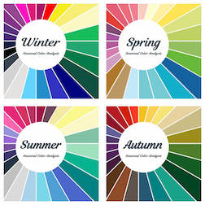
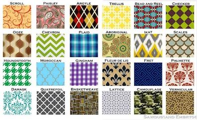

Colors and patterns are all about contrast and similarity with you complextion and style. Patterns can range based on someones personal favorites and style, however colors are predetermined by your complextion. Here are some links to useful sites to learn more; a site that helps you determine you personal colors, a site that color-analyzes your face, a site about how color analyzing works, a site about the history of patterns in fashion, and a site about current fashion pattern trends:
|  |  |